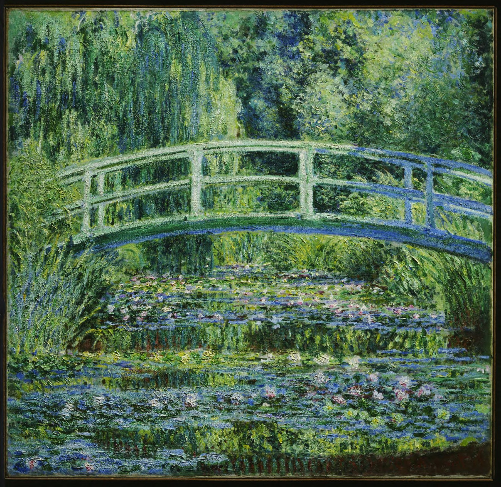

100BANCH 常設展示企画書
絵画を聴く
金子淳平 ／ 開催希望：2026年12月中旬
01 — 概要
概要
「絵画を聴く」は、絵画の中に鳴っていたであろう音風景を、作曲によって立ち上げる作品です。
モネ《睡蓮と日本の橋》の複製の前に、同じ大きさの木枠を置きます。木枠に近づくと、距離センサーが距離を読み取り、聴こえる音が変わります。音は木枠の振動としても伝わります。
言葉や視覚の程度にかかわらず、さまざまな人が同じ場で絵を体験できます。
これに加えて、「PCなしで動かす」「展示中ずっと動かす」ことを試みます。
02 — 機材と費用
機材と費用
| 部品 | 型番・用途 | 数量 | 単価 | 小計 |
|---|---|---|---|---|
| 距離センサー | ToFセンサー VL53L0X モジュール（Hailege） | 1 | ¥740 | ¥740 |
| マイコン | ESP32 開発ボード | 1 | 約¥2,200 | 約¥2,200 |
| アンプ | 手持ちのアンプを使用 | 1 | 手持ち | 手持ち |
| 振動スピーカー | 手持ちの振動スピーカーを使用（木枠の左右に1つずつ） | 2 | 手持ち | 手持ち |
| 記録メディア | microSDモジュール ＋ microSD | 1 | 約¥1,000 | 約¥1,000 |
| 電源 | USB 5V ACアダプタ | 1 | 約¥1,000 | 約¥1,000 |
| 額縁 | フォトフレーム 500×500 mm ブラック（Vasemouh） | 1 | ¥2,777 | ¥2,777 |
| 木枠 | 角材（50 cm × 4辺）・ネジ・接着剤・塗装（外寸50×50 cm、奥行き約4 cm） | 1 | 約¥3,000 | 約¥3,000 |
| 複製 | 睡蓮の複製プリント（約50 cm四方） | 1 | 約¥4,000 | 約¥4,000 |
| 配線 | ケーブル・コネクタ・固定部材 | 1 | 約¥1,500 | 約¥1,500 |
| 合計（概算） | 約¥16,217 |
税込の概算（2026年10月時点）。「約」は見積り、他は販売価格。手持ちの機材、送料、工賃は含まない。
距離センサー・マイコン分（約¥2,940）をご負担いただき、残りの約¥13,277は私が負担する形でいかがでしょうか。ご予算について、ご相談させてください。
03 — 設置のイメージ
設置のイメージ
04 — 必要な広さ（推定）
必要な広さ
鑑賞スペースを含めて、約1.2 × 1.5 mです。
- 机
- 約120 × 60 cm
- 鑑賞
- 机の前に約90 cm
- 合計
- 約1.2 × 1.5 m
- 電源
- 机の近くにコンセントを1か所
05 — 使う絵画
睡蓮
クロード・モネ《睡蓮と日本の橋》（1899年）の複製を、約50 cm四方に縮小して展示します。
- 原寸
- 90.5 × 89.7 cm
- 展示
- 約50 × 50 cm
- 所蔵
- Princeton University Art Museum

PLACEHOLDER
images/water-lilies-japanese-bridge.jpg
images/water-lilies-japanese-bridge.jpg
Claude Monet, Water Lilies and Japanese Bridge, 1899. Princeton University Art Museum. From the collection of William Church Osborn (Class of 1883), given by his family.
06 — スケジュール（案）
スケジュール
- 2026.10仕様の確定、センサーの動作検証
- 2026.11 上旬音の処理の移植
- 2026.11 中旬–下旬木枠と筐体の製作、複製の制作
- 2026.12 上旬連続稼働テスト
- 2026.12 中旬展示（100BANCH）